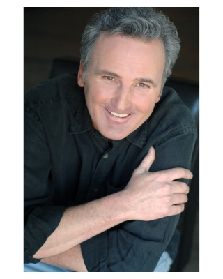

#11095 Eiskalte Leidenschaft
Alternativ: Final Analysis (Englischer Titel)

 IMDB-Wertung: 5.8 / 10
IMDB-Wertung: 5.8 / 10  Metascore: 0
Metascore: 0 
Der Psychiater Isaac Barr kommt beim Fall der verunsicherten Diana nicht weiter. Bessere Behandlungsergebnisse erhofft er sich, indem er Dianas Schwester Heather befragt. Er verliebt sich in sie. Als Heather ihren Ehemann vermeintlich im Affekt erschlägt, setzt sich Isaac für seine Geliebte ein. Zufällig stößt Isaac auf einen Hinweis, der ihm die Augen öffnet: Die zwei Schwestern haben ihn in einem Komplott benutzt, an dessen Ende ein kühl geplanter Mord stand. Urplötzlich ist Isaac der Hauptverdächtige in dem Mordfall...
Jahr: 1992
Dauer: 119 Minuten
FSK: 12
Land: USA Studio: Warner Bros.Tonspuren: DD5.1 - ,
Untertitel:
Auflösung: 1080p (1920x1080) Größe: 4382 MB
Genre: Thriller, Drama
Regisseur: Phil Joanou
Drehbuch: Robert Berger, Wesley Strick, Wesley Strick
Soundtrack: George Fenton
Darsteller:
 Richard Gere als Isaac Barr
Richard Gere als Isaac Barr Kim Basinger als Heather Evans
Kim Basinger als Heather Evans Uma Thurman als Diana Baylor
Uma Thurman als Diana Baylor Eric Roberts als Jimmy Evans
Eric Roberts als Jimmy Evans Paul Guilfoyle als Mike O'Brien
Paul Guilfoyle als Mike O'Brien Keith David als Detective Huggins
Keith David als Detective Huggins Robert Harper als Alan Lowenthal
Robert Harper als Alan Lowenthal- Rita Zohar als Dr. Grusin
 George Murdock als Judge Costello
George Murdock als Judge Costello- Shirley Prestia als D.A. Kaufman
 Tony Genaro als Hector
Tony Genaro als Hector- Katherine Cortez als Woman Speaker
- Wood Moy als Dr. Lee
- Corey Fischer als Forensic Doctor
 Jack Shearer als Insurance Consultant Doctor
Jack Shearer als Insurance Consultant Doctor- Derick Alexander als Ambulance Attendant
-  Dihlon McManne als Ambulance Attendant
- Rico Alaniz als Old Spanish Man
- Charlie Holliday als Jury Foreman
- Anna Nicholas als Ex-Girlfriend
 Erick Avari als Moderator (uncredited)
Erick Avari als Moderator (uncredited)- Forest Baker als Hospital Visitor (uncredited)
- Iva Franks Singer als College Student (uncredited)
 Harris Yulin als Prosecuting Attorney (uncredited)
Harris Yulin als Prosecuting Attorney (uncredited)- Agustin Rodriguez als Pepe Carrero
- Lee Anthony als Judge
- Abigail Van Alyn als Night Nurse
- Roger Bearde als Orderly
- Tessa Koning-Martinez als Witness
- Ernie Davis als Young Tough
- Jeff Tanner als Dinner Companion
- Jeff Smolek als Hospital Security
- John Roselius als Sheriff's Deputy
- Michael Sayles als Deputy Guard
- Maelani Atken als Waitress (uncredited)
Datei: X:\1992\Eiskalte Leidenschaft (1992, FSK12, 1920x1080).mkv seit 24.04.2019
Festplatte: Gemischt-01+Anime
 Es gibt insgesamt 57 Filme in der Gruppe '1992'
Es gibt insgesamt 57 Filme in der Gruppe '1992'